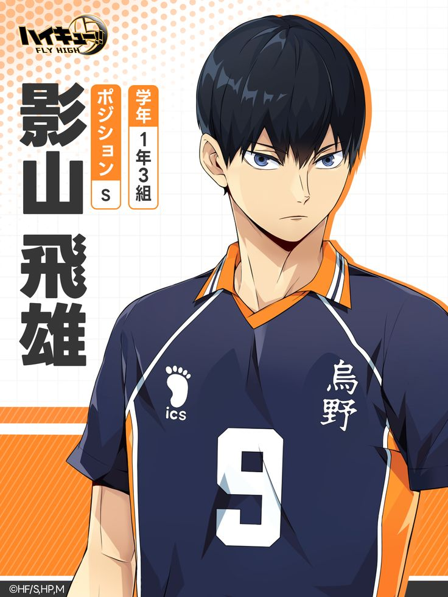
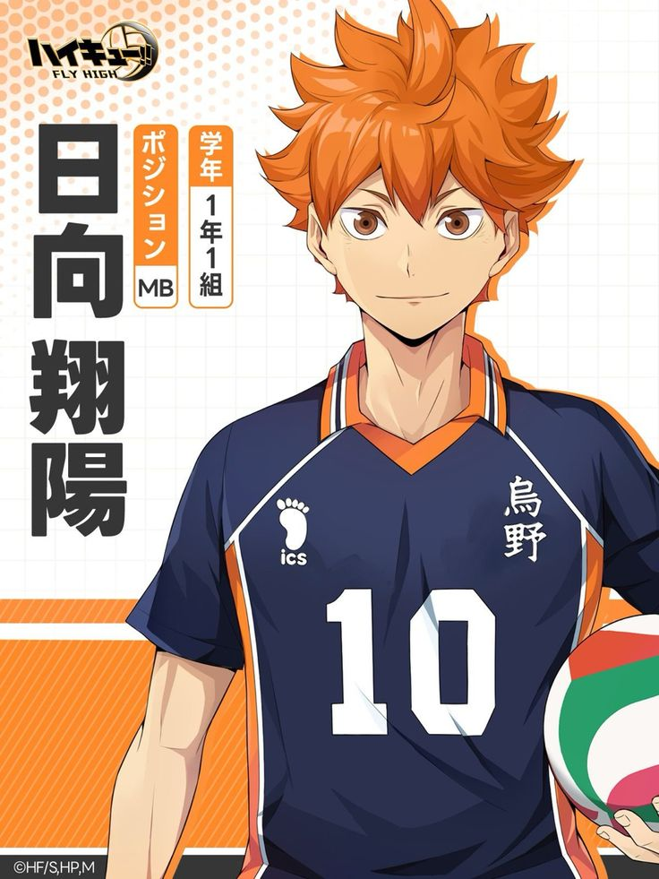
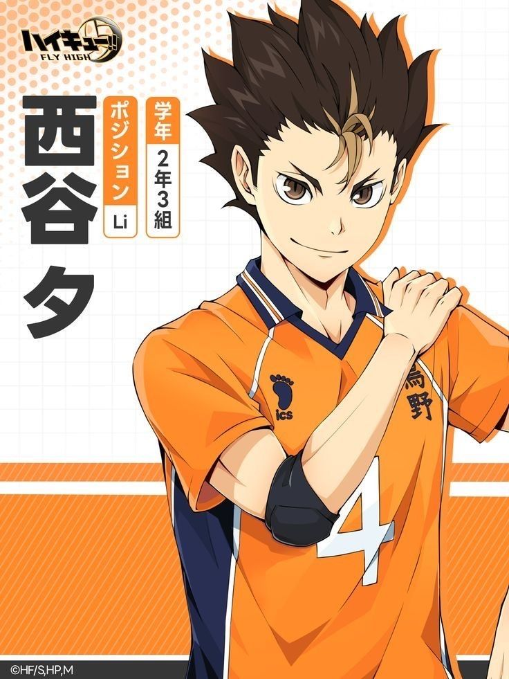

Ótimos jogadores
Time principal do anime
O Colégio Karasuno, também conhecido como "Corvos", é um colégio localizado na prefeitura de Miyagi, Japão, e é o local onde a história de Haikyuu!! se desenrola. Karasuno é famoso por ter um time de vôlei masculino forte no passado, mas que caiu em declínio, ganhando o apelido de "Corvos Caídos". A escola busca recuperar seu antigo esplendor com o surgimento de novos talentos como Shoyo Hinata e Tobio Kageyama.
Tobio Kageyama
Shoyo Hinata
Yu Nishinoya
